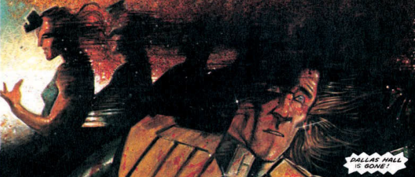

Marlon "Chopper" Shakespeare started out his criminal career as a city-famous wall scrawler. When he got out of the cubes, he became a sky surfer and took part in various (usually illegal) international races before retiring to the radlands of Oz.
Well, either that or he died years earlier in a sacrificial gesture that made a strong statement about how media-driven spectacle could lead to gladitorial inhumanity (whilst also being a study of the futility of a macho mindset and the inability to commit due to an ingrained sense of inferiority).
Art by Colin MacNeil
| Story Title | Parts | Pages | w indicates a wraparound coverCovers | Year(s) | Issues | Writer | Artist | Colourist | Letterer |
|---|---|---|---|---|---|---|---|---|---|
From Judge DreddUnamerican Graffiti | 2 | 14 | 206: Mike McMahon 1 | 1981 | 206-207 | John Wagner | Brett Ewins: 1 Ron Smith: 1‑2 various | <-- pp1-2e., [b&w] | Tom Frame |
From Judge DreddMidnight Surfer | 6 | 43 | 424 [w]: Cam Kennedy 426: Cam Kennedy 428: Cam Kennedy 1w,2 | 1985 | 424-429 | Alan Grant John Wagnervarious | Cam Kennedy | <-- 12pp, [b&w] | Tom Frame |
From Judge DreddOz | 26 | 198 | 9 | 1987-1988 | 545-570 | Alan Grant John Wagnervarious | Cliff Robinson: 1 Jim Baikie: 2, 25‑26 Dave Elliot, Garry Leach, Will Simpson: 3‑4 Brendan McCarthy: 5, 7‑8, 14‑16 Will Simpson: 6, 11‑12, 17‑19 Steve Dillon: 9‑10 Barry Kitson: 13, 22‑24 John Higgins: 20‑21 various | <-- 52pp, [b&w] | Tom Frame |
From Judge DreddHitman | 3 | 24 | 571: Steve Dillon 572: Jim Baikie 2 | 1988 | Reprints: M215571-573 | Alan Grant John Wagnervarious | Jim Baikie | <-- 6pp, [b&w] | Tom Frame |
| Soul on Fire | 4 | 27 | 594: Colin MacNeil 1 | 1988 | Reprints: B2KSE1 M282 (supplement) 594-597 | John Wagner | Colin MacNeil | [b&w] | Tom Frame |
| Song of the Surfer | 12 | 83 | 654: Colin MacNeil 660: Colin MacNeil 665: Colin MacNeil 3 | 1989-1990 | Reprints: M282‑M283 (supplements)654-665 | John Wagner | Colin MacNeil | Tim Perkins: 1‑7 Fully Painted: 8‑12 various | Bambos Georgiou |
| Earth, Wind & Fire | 6 | 62 | 0 | 1990-1991 | M1.01-1.06 | Garth Ennis | John McCrea | <-- | Tom Frame |
| Dead Man's Twist | 1 | 8 | Martin Emond 1 | 1993 | Reprints: B2KSE4M2.36 | Garth Ennis | Martin Emond | <-- | Roger Langridge |
From Judge DreddFuneral in Mega-City One | 1 | 6 | Colin MacNeil, Sean Taylor 1 | 1994 | JDPP4 | John Wagner | Colin MacNeil | <-- | Tom Frame |
| Supersurf 13 | 8 | + 1 credit pages48 | 969: Sean Phillips 1 | 1995 | 964-971 | Alan McKenzie | John Higgins | Turmoil Colour Studio TCS | Tom Frame |
From Whatever Happened to…Cookie? | 1 | 6 | 0 | 2004 | Reprints: M388 (supplement)M217 | Simon Spurrier | Roger Langridge | [b&w] | Roger Langridge |
| The Big Meg | 8 | 48 | 1388: Colin MacNeil 1392: Dylan Teague & Chris Blythe 2 | 2004 | 1387-1394 | John Wagner | Patrick Goddard (P) Dylan Teague (I)various | Chris Blythe | Tom Frame |
First episode is labelled as Wandering Spirit (but listed in the contents as Wandering Soul).Wandering Soul | 5 | 50 | M395: Brendan McCarthy 1 | 2018 | M395-M399 | David Baillie | Brendan McCarthy | <-- | Ellie de Ville |
| Dreamgazer | 1 | 6 | 0 | 2021 | SFS26 | David Baillie | Tom Foster | John Charles | Jim Campbell |
From Judge Dredd / Anderson Psi Division No supertitle. A Dredd/Anderson crossover.Apotheosis | 1 | 10 | 0 | 2021 | SFS26 | Michael Carroll Maura McHughvarious | James Newell | Jim Boswell | Simon Bowland |
| Chopper Don't Surf | 1 | 10 | 0 | 2021 | 2246R | David Barnett | Nick Roche | Pippa Bowland | Jim Campbell |
| >> Features << | |||||||||
From Judge DreddChopper Support Kit | 1 | 1 | 0 | 1987 | 545 | editorial | unknown | <-- | n/a |
Linked to [Features] | IndexesChopper: The Series Index | 1 | 1 | 0 | 1994 | JDPP4 | unknown | Colin MacNeil | <-- | n/a |
From Tharg's Datachips#1: Chopper | 1 | 0.5 | 0 | 1996 | 984 | n/a | Colin MacNeil | <-- | n/a |
Data‑File.Chopper | 1 | 1 | 0 | 2003 | p2004 | editorial | n/a | n/a | n/a |
| >> Posters / Teasers << | |||||||||
From Judge Dredd[Oz - Judge Dredd & Chopper] | 1 | 1 | 0 | 1988 | 559 | n/a | Liam McCormack-Sharp | <-- | n/a |
From Judge Dredd Judge Dredd & Chopper.Oz Gallery | 1 | 1 | 0 | 1988 | 566 | n/a | Barry Kitson | <-- | n/a |
From Judge Dredd Judge Dredd & Chopper.Oz Gallery | 1 | 1 | 0 | 1988 | 567 | n/a | Will Simpson | <-- | n/a |
From Judge DreddOz Gallery - Cosmic Surfin' | 1 | 1 | 0 | 1988 | 568 | n/a | Barry Kitson | <-- | n/a |
From Judge Dredd Judge Dredd & Chopper.Oz Gallery | 1 | 1 | 0 | 1988 | 569 | n/a | Liam McCormack-Sharp | <-- | n/a |
Star Scan.[Chopper] | 1 | 1 | 0 | 1990 | 662 | n/a | Glenn Fabry | <-- | n/a |
From Judge Dredd Judge Dredd & Chopper.Chopper Lives! | 1 | 8 | 0 | 1994 | JDPP4 | n/a | Colin MacNeil | <-- | n/a |
| Chopper | 1 | 1 | 0 | 2003 | p2004 | n/a | Andy Clarke | Chris Blythe | n/a |
From Judge Dredd Fortieth Anniversary teaser.[Judge Dredd & Chopper] | 1 | 2 | 0 | 2016 | 2011 | n/a | Chris Weston | <-- | n/a |
Subtitled: "Chopper: Wandering Soul".Return to Oz | 1 | 1 | 0 | 2017 | 2061 | n/a | Brendan McCarthy | <-- | n/a |
| year | episodes | pages |
| 1986 | 0 | 0 |
| 1987 | 0 | 0 |
| 1988 | 4 | 27 |
| 1989 | 6 | 42 |
| 1990 | 10 | 81 |
| 1991 | 2 | 22 |
| 1992 | 0 | 0 |
| 1993 | 1 | 8 |
| 1994 | 0 | 0 |
| 1995 | 8 | 48 |
| 1996 | 0 | 0 |
| 1997 | 0 | 0 |
| 1998 | 0 | 0 |
| 1999 | 0 | 0 |
| 2000 | 0 | 0 |
| 2001 | 0 | 0 |
| 2002 | 0 | 0 |
| 2003 | 0 | 0 |
| 2004 | 8 | 48 |
| 2005 | 0 | 0 |
| 2006 | 0 | 0 |
| 2007 | 0 | 0 |
| 2008 | 0 | 0 |
| 2009 | 0 | 0 |
| 2010 | 0 | 0 |
| 2011 | 0 | 0 |
| 2012 | 0 | 0 |
| 2013 | 0 | 0 |
| 2014 | 0 | 0 |
| 2015 | 0 | 0 |
| 2016 | 0 | 0 |
| 2017 | 0 | 0 |
| 2018 | 5 | 50 |
| 2019 | 0 | 0 |
| 2020 | 0 | 0 |
| 2021 | 2 | 16 |
| 2022 | 0 | 0 |
Core comic strip data (excludes other content):